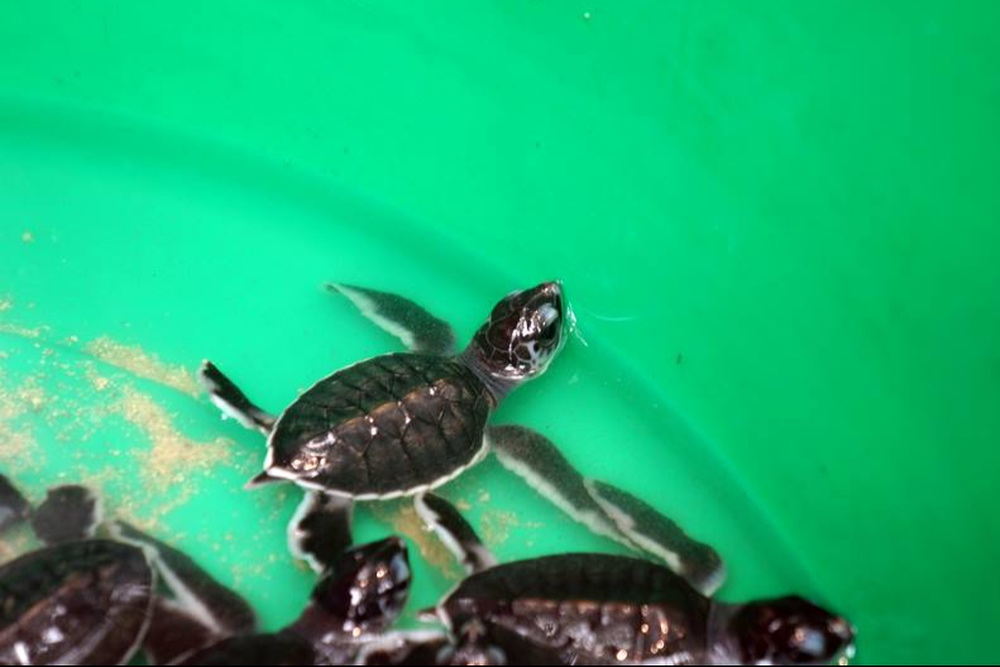
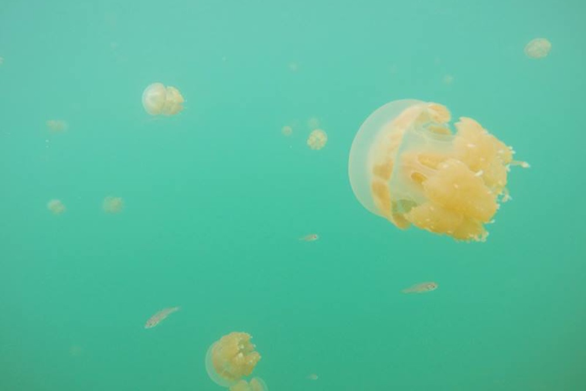
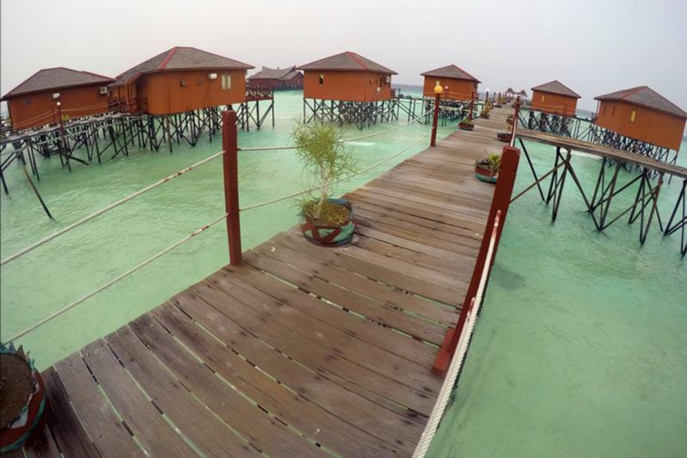

|

|
Di Kepulauan Derawan Kalian Bisa Melihat Dari Dekat Rumah Para Penyu Bertelur Di Pulau Sangalaki
Pulau Sangalaki adalah salah satu pulau dari Kepulauan Derawan yang menawan. Pulau ini bisa ditempuh kira-kira selama satu jam perjalanan dari Pulau Maratua. Sebelum merapat ke pantainya yang berpasir putih, terlihat dermaga yang memanjang dari kejauhan. Ini juga salah satu ciri paling mudah untuk mengenali Pulau Sangalaki dari jauh.
Konon kabarnya kalau Pulau Sangalaki ini adalah salah satu tempat terbaik diving di Indonesia selain Raja Ampat. Ya, saya sih kurang tahu pasti, karena saya belum pernah diving disekitar pulau ini. Namun saya yakin, kehidupan bawah laut sekitar pulau ini adalah… surga! Selain itu, Pulau Sangalaki ini juga merupakan rumah para penyu untuk bertelur.
Penyu Sisik dan Penyu Hijau adalah dua dari banyak jenis penyu di dunia yang menjadikan Pulau Sangalaki sebagai rumah untuk bertelur. Jadi, nggak heran lagi kalau ketika berjalan-jalan di sekitar pulau akan melihat banyak cekungan di pasir. Bisa jadi salah satu dari cekungan tadi adalah sarang penyu bertelur. Weits, jangan diganggu atau dirusak ya! Karena penyu adalah binatang lucu yang perlu dilindungi!
|
|

|
Di Kepulauan Derawan Kalian Bisa Berenang Dengan Ubur-Ubur Danau Kakaban Yang Enggak Menyengat
Di laut lepas, mungkin Ubur-ubur dianggap sebagai binatang yang berbahaya dengan sengatannya. Namun, tidak dengan Ubur-ubur yang ada di Pulau Kakaban, Kepulauan Derawan! Iya, di Pulau Kakaban terdapat Danau Kakaban, danau air asin yang merupakan tempat tinggal Ubur-ubur yang sudah tidak bisa menyengat lagi.
Jadinya berenang dengan mereka adalah sangat aman. Bahkan, mereka ini terlihat sangat lucu ketika sedang berenang di dalam air. Seakan, mereka ini malah mengajak saya berlomba berenang, mengikuti mereka kesana-kemari. Namun, saya harus tetap berhati-hati ketika berenang disana, agar tidak menyakiti Ubur-ubur Danau Kakaban yang lucu itu!
|
|

|
Di Kepulauan Derawan Kalian Bisa Menginap Di Atas Laut, Di Maratua Paradise Resort
Maratua Paradise Resort ini adalah tempat yang sangat asik untuk berlibur. Pun cuaca di Kalimantan kurang begitu bagus, tetap saja laut di sekitar Maratua Paradise Resort ini berwarna biru toska yang cukup menggoda.
Maratua Paradise Resort ini berada di Pulau Maratua, Kepulauan Derawan yang bisa ditempuh dengan perjalanan speed boat sekitar 3 jam dari Berau, Kalimantan Timur. Penginapan di Maratua Paradise Resort, ini unik, nggak seperti resort pada umumnya.
Di Maratua Paradise Resprt terdapat penginapan yang namanya, Water Villa dimana penginapan tadi dibangun di atas air laut dengan dermaga yang memanjang hingga ke pantai berpasir putih. Kebetulan saya menginap di water villa, dengan ratusan ikan berenang bebas dibawahnya. Yakin nggak mau main ke Derawan?
|